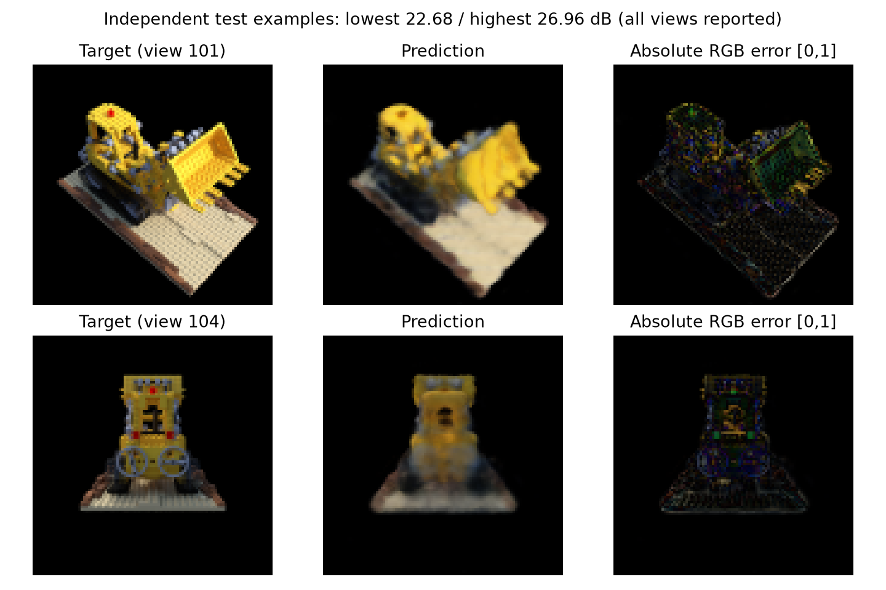
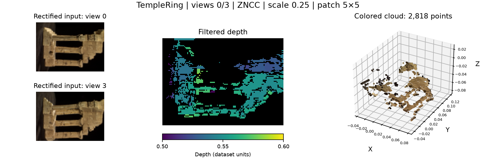
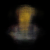

Computer vision · Penn CIS 5800 coursework extension
3D Reconstruction and Neural Rendering
Spring 2026
Recover scene geometry from calibrated stereo, then evaluate a neural radiance field on independent views of a static scene.
- Python
- NumPy
- SciPy
- PyTorch
NeRF: independent-view evaluation
24.19 dB PSNR / 0.831 SSIM averaged over six held-out 100×100 test views of one synthetic Lego scene. A separate validation set selected the checkpoint.

The fresh model uses 32 samples per ray and known camera poses. Camera-convention checks corrected the image-down ray sign; finite-interval rendering and analytic opacity tests make assumptions explicit. The formal run uses disjoint training, validation and test views.
Training, splits and metric scope
90 training views (0–89), five validation views (90/92/94/96/98), six test views (100–105). Seed 5670; 20,000 training steps; 1,024 rays per step; RTX 4070 Ti; approximately 104 s including validation. The test renderer is fixed at 32 samples. Mean PSNR is averaged over per-view dB values. SSIM uses an 11×11 Gaussian window with sigma 1.5 and RGB averaging.
The train, validation and test views are disjoint for this model. Detailed evaluation history is recorded in the experimental report.
Calibrated stereo: images to colored geometry
Rectification aligns calibrated image pairs for disparity matching. SSD, SAD and ZNCC are compared at matched resolution and filtering settings; the resulting depth is back-projected and colored from the image.

| Matcher | Seconds/pair | LR pass | Filtered depth coverage |
|---|---|---|---|
| SSD | 0.411 | 48.8% | 31.1% |
| SAD | 0.414 | 48.0% | 30.9% |
| ZNCC | 0.298 | 42.8% | 30.6% |
No local depth ground truth is available. Coverage and left–right consistency are not depth accuracy; the timings do not identify the most accurate matcher.
Controlled positional-encoding comparison

| Frequency | PSNR ± sample SD (dB) | Mean SSIM |
|---|---|---|
| L=0 | 20.59 ± 0.25 | 0.652 |
| L=2 | 26.08 ± 0.01 | 0.802 |
| L=6 | 31.97 ± 0.37 | 0.908 |
Higher frequency preserves more detail in this fit. All runs share the target, 2,000 steps, optimizer, batch size and per-seed minibatch stream; encoding also changes the first-layer parameter count.
A separate render-only sampling study
With the 32-sample-trained checkpoint frozen, validation PSNR increases from 24.08 dB at 32 render samples to 24.60 at 64 and 24.64 at 128. Mean time rises from 0.024 to 0.039 and 0.079 s/view. Only inference quadrature varies; the trained checkpoint stays fixed.
Historical camera-sweep diagnostic

About the project
Developed from Penn CIS 5800 coursework using the supplied tasks, calibration, architecture and frameworks. Implementation work includes camera/ray checks, the image-y sign correction, finite rendering tests, validation-selected training, independent-view evaluation and controlled experiments. The original NeRF baseline is preserved.
Engineering observations
The NeRF experiment uses one static synthetic scene, one training seed and 100×100 images. Thin structures, specular surfaces and edges retain errors. Stereo has holes, outliers and scene-specific filtering. Depth ground truth is unavailable; the comparison measures coverage and consistency. Known calibration is assumed.